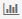
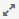
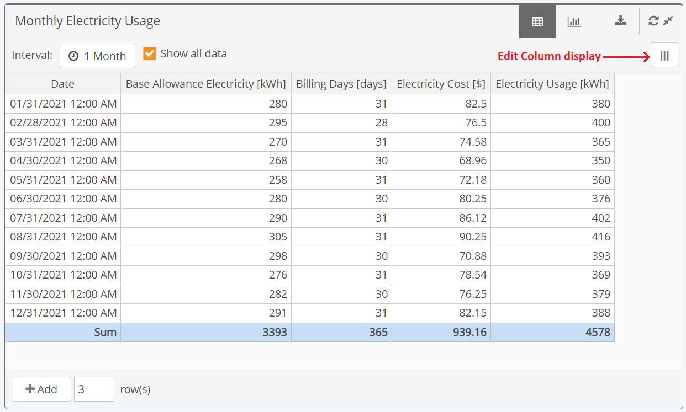
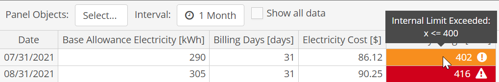
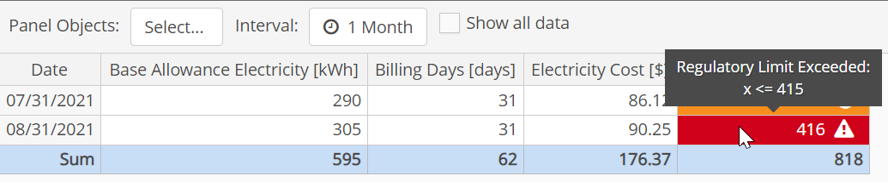
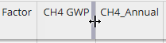
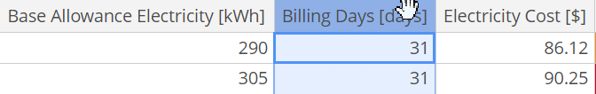
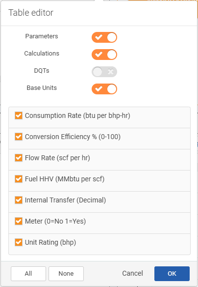
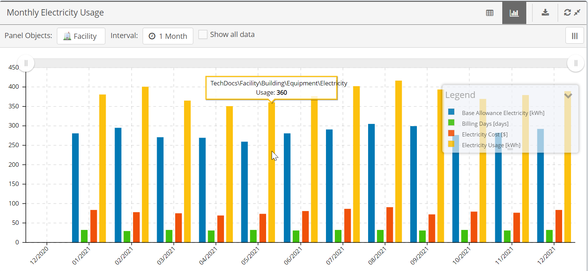
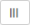

or chart
or chart Numeric Data Panels can be used both to view numeric data in table or chart mode and to enter data in an easy interface. Features include:
To change the panel view, click the table or chart

icon on the panel bar.To refresh data in the panel, click the Refresh  icon.
icon.
To expand the panel to full screen size (depending on device), click the Expand

icon.In Table View, you can enter or edit data, view existing data, and export the contents of the table to Excel. You can also customize the table display by resizing and re-arranging columns, or choosing columns to show or hide.
Various other options may be available to you, according to the configuration of the panel, including:

Aggregates, if included, will be shown at the bottom of the data table for columns, or on the right for rows.
Data limit exceedances are color-coded. A yellow highlighted cell indicates an internal limit exceedance, red indicates a regulatory exceedance. Hover over the cell to see the limit values.


To resize a column:
Hover over the right edge of the column header until the slider appears, then select and hold while you drag and drop to the desired width.

To re-order columns (move a column):
Hover over the column header to select the column, click and hold, and drag and drop the column to the desired position.

To select columns to show or hide:
Select the Columns button on the right side of the panel header.
The names of the numeric requirements, calculations and data quality (DQT) fields available for the page are shown.

Use the toggles to show or hide a data type (Parameters, Calculations, and Data Quality fields).
Check or uncheck specific items to show or hide them in the panel display. .
Click OK to apply your preferences
You can view data in graphic format in the chart view.


to choose Chart display options, including data and limits to display. See Edit Data DisplayShow or hide the legend by clicking the arrow.

Click and hold to drag the legend to another position.